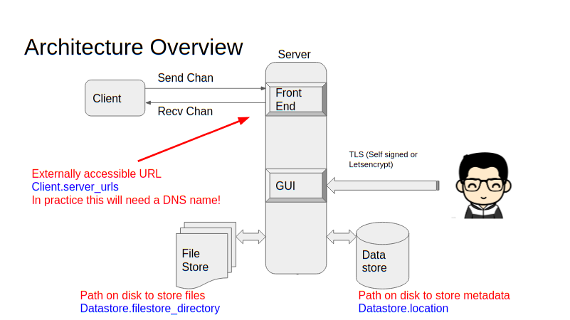
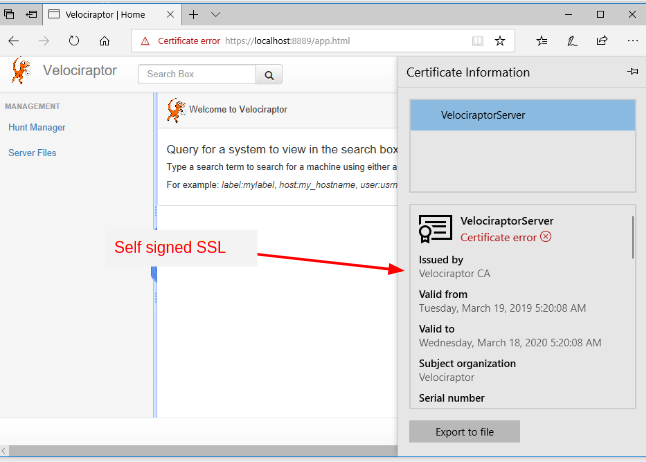

The simplest way to deploy a Velociraptor server is via a self signed, stand alone deployment. Later we will see how to deploy Velociraptor in production, but this page will help you deploy a stand alone test environment.
Before we start it is useful to see how a Velociraptor deployment looks at a high level:

The administrator uses their browser to connect to the Velociraptor GUI over SSL. Endpoint systems (Called Clients) are in turn connected to the frontend, where they may be queried by the user in order to collect forensic artifacts.
The Velociraptor binary distributed through the Github releases page contains all functionality in the same binary. The same executable can act as a server or a client depending on command line options. This makes it easier to deploy and use.
Velociraptor uses a configuration file to control the server and client. Before making a new deployment, you need to generate new configuration files. The server configuration file also contains key material used to secure communications with your clients.
Therefore our first step is to generate new configuration files. The easiest way to get started is using the interactive config generator which will build a pre-configured deployment type (You can tweak this deployment later if you want):
$ velociraptor config generate -i
?
Welcome to the Velociraptor configuration generator
---------------------------------------------------
I will be creating a new deployment configuration for you. I will
begin by identifying what type of deployment you need.
[Use arrows to move, space to select, type to filter]
> Self Signed SSL
Automatically provision certificates with Lets Encrypt
We will cover Self Signed SSL deployment in this page. This mode of operation has the following aspects:
Frontend and GUI Communication occurs over TLS with self signed certificates.
GUI Communications are authenticated with basic Auth.
GUI will bind to localhost only on port 8889 (i.e. https://localhost:8889/)
Selecting “Self Signed SSL” proceeds to ask the following questions:
Self Signed SSL
Generating keys please wait....
? Enter the frontend port to listen on. 8000
? What is the public DNS name of the Frontend (e.g. www.example.com): www.example.com
? Path to the datastore directory. /data/velo/
? Path to the logs directory. /data/logs/
? Where should i write the server config file? server.config.yaml
? Where should i write the client config file? client.config.yaml
? GUI Username or email address to authorize (empty to end): mic
? Password *********
If you want clients to be able to reach the server from the internet
you must provide an external DNS name for the server (if you use a
dynamic external IP address you might want to use dynamic DNS as
well). The DNS name will be used by the clients to connect to the
frontends (in the above example it will be
https://www.example.com:8000/), so you need to ensure the port is
open and DNS names resolve properly.
It might be tempting to specify an IP address here, especially if you have a static IP or this is an internal deployment. This is not recommended, since if you need to change the IP address, existing clients will continue to attempt to contact the old IP address - rendering them unreachable.
Next you should specify the paths to the data store where Velociraptor will write collected data. This should be a large enough disk to hold all the data you intend to collect. Audit logs can also be written to the same location.
The guided installer will now create both a client and server configuration files, then proceed to creating some GUI users. Those users will be allowed to log into the admin UI.
You can always add new users to the GUI using the command
velociraptor --config server.config.yaml user add MyUserName. User
credentials are stored in the data store and not in the config
file. If you need to change a user’s password simply add them again
with the new password.
Velociraptor does not enforce any particular data retention policies. At any time the data store can be wiped, and the server restarted. If this happens, all the currently deployed clients will be automatically re-enrolled with their existing client IDs (You might want to archive any custom artifacts that you wrote however).
Since Velociraptor uses plain files, it is possible to archive the entire deployment, or simply delete older files with a cron job.
We start the server using the “frontend” command (The -v flag causes verbose output to be shown in the terminal):
# velociraptor --config server.config.yaml frontend -v
[INFO] 2019-04-01T14:44:40+10:00 Starting Frontend. {"build_time":"2019-04-01T00:25:49+10:00","commit":"503b1cf","version":"0.2.8"}
[INFO] 2019-04-01T14:44:40+10:00 Loaded 99 built in artifacts
[INFO] 2019-04-01T14:44:40+10:00 Loaded artifact_definitions/custom/Test.Yara.Scan.yaml
[INFO] 2019-04-01T14:44:40+10:00 Launched Prometheus monitoring server on 127.0.0.1:8003
[INFO] 2019-04-01T14:44:40+10:00 Frontend is ready to handle client TLS requests at 0.0.0.0:8000
[INFO] 2019-04-01T14:44:40+10:00 Starting hunt manager.
[INFO] 2019-04-01T14:44:40+10:00 Launched gRPC API server on 127.0.0.1:8001
[INFO] 2019-04-01T14:44:40+10:00 GUI is ready to handle TLS requests {"listenAddr":"127.0.0.1:8889"}
[INFO] 2019-04-01T14:44:40+10:00 Starting hunt dispatcher.
[INFO] 2019-04-01T14:44:40+10:00 Starting stats collector.
The frontend indicates which port the GUI will listen on
(i.e. https://127.0.0.1:8889).
Velociraptor currently does not support multiple frontends - all clients connect to the same frontend which performs all roles (serving client connections, serving the GUI and running the API server). We have used Velociraptor with 5-10k endpoints and it performs quite well. Eventually we plan to support horizontal scaling to multiple frontends.
Start a browser and point it at your GUI URL. In this mode, the GUI is served over TSL with a self signed certificate. This shows up as an untrusted certificate in browsers. You would need to log in as the user you created earlier.

If you want to have an SSL certificate issued by Letsencrypt (so the browser warning does not show up) see the next section (Deployment in the cloud).
Thats it! you have a Velociraptor server up and running. Next you will need to distribute and install your clients.